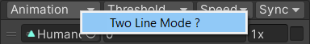

Released 2023-01-26
See the Animancer v7.0 Upgrade Guide if you are upgrading from a version older than that.
Features
Attack of the Clones
FadeMode.FromStart now works with all state types.
- Added
AnimancerState.Cloneto make a copy of any state. - Added
OptionalWarning.CloneComplexStatefor awareness when cloning anything other than aClipState. - Changed
AnimancerLayer.GetOrCreateWeightlessState:- It now uses
AnimancerState.Cloneso it's no longer limited to onlyClipStates. - Exceeding the
AnimancerLayer.MaxCloneCount(default3) will now simply return the lowest weight state. - Removed
OptionalWarning.MaxStateDepth.
- It now uses
Simplified playing the same animation on multiple layers
The behaviour of the following code has changed:
1. animancerComponent.Layers[0].Play(clip);// Play an animation on Layer 0.
2. animancerComponent.Layers[1].Play(clip);// Play the same animation on Layer 1.
| Line | Old Behaviour | New Behaviour |
|---|---|---|
| 1 | Create a state on Layer 0. | Create a state on Layer 0. |
| 2 | Move the existing state to Layer 1. | Clone the existing state to play on Layer 1, leaving the original on Layer 0. |
| If you wanted the new behaviour, you had to manually create a second state, give it a unique Key, and refer to it using that Key. | If you want the old behaviour, you can use animancerComponent.States.TryGet to get the state then set its LayerIndex and Play it. |
- This makes it much easier to play the same animation on multiple layers, which is much more common than wanting to move a state between layers.
- This change simplifies
LayeredAnimationManager.PlayActionFullBodyin the Dynamic Layers example a bit.
- This change simplifies
Simplified Mixer Initialization
Using Mixer Transitions is unchanged, but the process of creating Mixers in code has been streamlined.
All of the following examples produce (or used to produce) a mixer containing 3 child states:
idleat threshold0.walkat threshold0.5.runat threshold1.
| Old Code | New Code |
|---|---|
|
Several old initialization functions have been removed to reduce clutter. Saving that little bit of typing wasn't worth confusing users by having so many different ways of initializing things (though it could easily be brought back if requested). |
Now you can use Collection Initializers to concisely create a mixer of any size. You could also omit the threshold numbers and call |
|
If not using the above method which only supports 2 or 3 states, you used to need to specify the number of children upfront and explicitly specify the index of each child as you create it. |
Now you can just treat mixers like a |
- Since you now add children one by one, the system will prevent any of them from being
null.- This improves performance a bit by avoiding the need for mixers to null check their children throughout the system.
- The downside is that it reduces the flexibility of the system slightly because you might have wanted to leave some child slots empty to fill later, but that seems like a very uncommon use case (and could still be achieved by implementing a simple dummy
AnimancerStateclass).
Mixer Transition Inspector
Added a Two Line Mode toggle function in the Animation heading of Mixer Transitions which shows each animation on a separate line from its threshold/speed/sync since the animation names are often cut off by the limited space.
| One Line | Two Lines |
|---|---|
Animancer Component Inspector
| Old | New |
|---|---|
- Replaced the
Is Playing Graphtoggle with a Play/Pause icon. - Replaced the Play/Pause buttons in the Transition Preview Window with icons.
- Added a button to step forward one frame at a time.
- Added Step Forward/Backward buttons to the Transition Preview Window.
- The frame step interval defaults to
Time.fixedDeltaTimeand can be changed inAnimancerSettings.
Add Animation
Added a new Add Animation context menu function in the AnimancerComponent Inspector shows a field with which you can add animations manually. This can be used with the other Inspector Controls to quickly test animations without needing to set up scripts for them.
Animator Controller Integration
Added various members to ControllerState and HybridAnimancerComponent to make it easier to migrate from an Animator based setup:
parameterCount,parameters, andlayerCountto match the naming conventions inAnimator.SetFloatoverloads with damping parameters. This simply uses a dictionary to store the velocity values since the Playables API doesn't have damping built in.Updateas an extension method which callsEvaluate(not a regular method because we don't want Unity to call it every frame).- The Animator Controllers page goes into more detail.
- Also changed
HybridAnimancerComponentto defaultAnimancerPlayable.KeepChildrenConnected = truewhich avoids some odd behaviour issues.
Improvements
- Added
AnimancerState.TimeD, andNormalizedTimeDto allow access to the time value as adouble(which is what the Playables API uses internally).- Changed
AnimancerState.RawTimeto adoubleand made itpublic.
- Changed
- Added
DirectionalClipTransition. - Added
ExposedPropertyTablefor Timeline's Exposed References system. - Added
AnimancerSettings.HideEventCallbacksto hide theCallbackfields of Animancer Events in the Inspector. - Added
AnimancerEvent.Sequence.ContentsAreEqual. - Added
ManualMixerStateSetandRemoveChildto more easily change and remove mixer children. - Added
SimpleTimerfor easily timing things. - Un-
sealedAnimancerPlayableand added a genericCreatemethod to allow you to use your own sub-class.- Changed
AnimancerComponent.InitializePlayableto take anAnimancerPlayableinstead of aPlayableGraphso you can create whatever subtype you want.
- Changed
- Improved the
MouseDragscript in the IK Puppet example. - Improved the
ReadMesystem:- Separated
AnimancerReadMeout of baseReadMeto allow it to be more easily shared between projects. - Added an automatic update check.
- Separated
Debugging
- Added assertions to prevent 2D Mixer child states from having identical thresholds.
- Added more descriptive error messages for when calling
AnimancerLayer.Playwith a state that has another state as its parent (instead of null or a layer). - Added more descriptive error messages for when calling
AnimancerState.SetRooton a state that has aParentwith a differentRoot.- Added
OptionalWarning.AnimatorDisabledwith a check on startup and a warning in the Inspector.
- Added
- Improved the
OptionalWarning.LockedEventswarning to explain that it can be prevented by callingstate.Events.SetShouldNotModifyReason(null);before making any modifications.
Changes
- Merged the base
MixerStateintoManualMixerStatebecause keeping them separate added unnecessary complexity. - Changed the Animancer.Lite.dll version mismatch warning to a dialogue window so you can't miss it.
- Changed the Lean example to expose a
Transformarray in the Inspector so it can work with Generic Rigs as well rather than only Humanoids. - Changed the default
AnimancerLayer.WeightlessThresholdfrom0.01to0.1. - Changed
AnimancerNode.Playabletopublicso you don't need to cast toIPlayableWrapper. - Changed
AnimancerNode.IsPlayingAndNotEndingtopublic. - Changed
AnimancerNode.ConstructorStackTracetopublic. - Changed
ClipState.ApplyAnimatorIKandApplyFootIKto returnfalseinstead of throwing an exception if you get the value before thePlayableis created. - Changed
AnimatorUpdateMode.AnimatePhysicsreferences toAnimatorUpdateMode.Fixedin Unity 2023 (it was renamed). - Removed
ScriptingDefineSymbolsand used the Animancer.asmdef to manage theUNITY_2D_SPRITEsymbol instead. - Separated the
RedirectRootMotionfunctionality from the Root Motion example script into seperate scripts in the Utilities folder and added a new documentation page for them.
Fixes
- Fixed various warnings in Unity 2022.2.
- Fixed
NullReferenceExceptioninAnimationClipEditor. #215 - Fixed
NullReferenceExceptioninAnimancerNode.AppendDescription. - Fixed
NullReferenceExceptioninManualMixerState.SynchronizeDirectwith nested mixers. - Fixed
NamedAnimancerComponentinitialization to allow it to be added an an object without anAnimatorat runtime. - Fixed
AnimancerNode.AppendIKDetailsto not throw errors if thePlayableisn't valid. - Fixed
AnimancerState.SetRootto not un-parent the state if its parent's root is also being set to the same value. - Fixed potential errors in
AnimancerState.IsPlayingAndNotEndingif the state has been destroyed. #226 - Fixed
AnimancerEventequality checks to properly handleNaNs. - Fixed
LinearMixerTransitionto apply its settings to the correct state. - Fixed tab navigation order of Inspector fields in Mixer Transitions.
- Fixed multi-selecting Transition Assets causing events to lose their names under certain circumstances. #220
- Fixed
ManualMixerState.ApplySynchronizeChildrento not keep the mixer in the update list if it isn't playing. #242 - Fixed the Pack Textures Tool to not give warnings if the 2D Sprite package isn't present.
- Fixed Transition Inspector indentation issues in Unity 2022.2. #246
- Fixed potential exception when removing animations from a Mixer Transition in the Inspector.